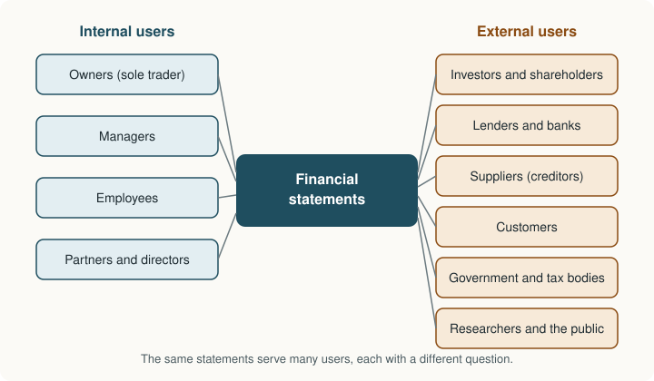

Chapter 1: Accounting, Its Users and Its Framework¶
What accounting is for, who relies on it, and the rules that make it trustworthy
Learning outcomes
After studying this chapter you should be able to:
- Define accounting and distinguish it from bookkeeping.
- Name the main users of accounting information and the question each one asks.
- Explain the basic terms of accounting: asset, liability, capital, revenue, expense, drawings and the rest.
- Distinguish the cash basis from the accrual basis and compute profit on each.
- State and apply the main accounting concepts and conventions.
- Describe the qualitative characteristics of useful financial information.
- Explain, in general terms, what accounting standards are and how IFRS and Ind AS fit together.
1.1 What accounting is¶
Every business makes hundreds of small exchanges: it buys goods, sells them, pays wages, borrows money, collects from customers. Each exchange on its own is easy to understand. Taken together, they are impossible to grasp unless someone records them, sorts them and adds them up. That is the work of accounting.
A widely used definition describes accounting as the process of identifying, measuring, recording and communicating economic information about an organisation, so that the people who use the information can make informed judgements and decisions. Each word in that definition matters:
- Identifying. Deciding which events are economic transactions of the business. A sale is; a friendly chat with a customer is not.
- Measuring. Expressing the transaction in money. Accounting records only what can be measured in money.
- Recording. Writing the transaction down, in date order, in the books of the business.
- Classifying. Grouping similar transactions together (all sales in one place, all rent payments in another).
- Summarising. Condensing the classified records into a small number of reports: the financial statements.
- Analysing and interpreting. Drawing meaning from the reports: is the business profitable, is it safe, is it improving?
- Communicating. Presenting the results to the people who need them, in a form they can understand.
Bookkeeping and accounting¶
Bookkeeping is the recording part of the process: writing up the journal, posting the ledger, keeping the cash book. It is routine and follows fixed rules. Accounting includes bookkeeping and goes further: it decides how transactions should be measured and classified, prepares the financial statements, and interprets them. A bookkeeper records that a machine was bought; an accountant decides how much of its cost should be charged as depreciation this year.
Key idea
Bookkeeping records; accounting records, summarises, interprets and communicates. Bookkeeping is the foundation on which accounting is built, so an error in the books is carried into every report built on them.
The accounting cycle in brief¶
The work of a year follows a regular cycle, which the chapters of this book follow too.
| Step | What is done | Where it is learned |
|---|---|---|
| 1 | A transaction occurs and a source document (invoice, receipt, cheque) is prepared | Chapter 3 |
| 2 | The transaction is recorded in a book of original entry (journal, cash book, sales book) | Chapters 3 and 4 |
| 3 | The entries are posted to accounts in the ledger | Chapter 3 |
| 4 | The accounts are balanced and a trial balance is prepared | Chapter 3 |
| 5 | Errors are corrected and year-end adjustments are made | Chapters 6 and 7 |
| 6 | Financial statements are prepared | Chapters 8 to 12 |
| 7 | The statements are analysed and interpreted | Chapter 13 |
Table 1.1. The accounting cycle and the chapters in which each step is taught.
1.2 The purpose of accounting and its limits¶
Accounting exists because people need to make decisions about organisations they cannot see into directly. Its main purposes are:
- To keep a systematic record of every transaction, so that nothing is forgotten and the business does not rely on memory.
- To find the profit or loss of a period, by comparing the revenue earned with the expenses incurred to earn it.
- To show the financial position at a date: what the business owns (its assets) and what it owes (its liabilities), and the owner's interest in it.
- To provide information to users inside and outside the business, so that they can make decisions.
- To protect the property of the business, by recording what it owns and owes, so that losses and fraud are noticed.
- To meet legal requirements. Companies, and many other businesses, are required by law to keep books and to publish or file financial statements; tax returns are based on accounting records.
Accounting also has limits, which a careful reader should keep in mind:
- It records only what can be measured in money. The skill of the workforce, the loyalty of customers and the reputation of the business are important but do not appear in the accounts (unless bought, as goodwill).
- It is largely historical. Most assets are shown at what they cost, not at what they are worth today. In times of rising prices, cost may be far below current value.
- It involves estimates and judgement. The useful life of a machine, the part of debtors that will never pay, the value of unsold goods: all are estimates.
- It can be manipulated. Within the rules there is room for choice, and a dishonest preparer can present a misleading picture. Accounting standards, audit and ethics (Chapter 14) exist to limit this.
1.3 The users of accounting information¶
Many different people rely on the same financial statements, each looking for an answer to a different question. They are usually divided into internal users, who run the business, and external users, who deal with it from outside.

| User | Main question | What they look at |
|---|---|---|
| Owner of a small business | Is the business earning enough to be worth my time and money? | Profit, capital, drawings |
| Managers | Which products, branches or costs need attention? | Detailed revenue and cost figures, budgets |
| Employees and their unions | Is the business stable, and can it afford better pay? | Profitability, growth, job security |
| Investors and shareholders | Should I buy, hold or sell my investment? | Profit, return on investment, dividends, growth |
| Lenders and banks | Will the loan and its interest be repaid on time? | Cash flow, liquidity, security, debt level |
| Suppliers | Will I be paid for goods supplied on credit? | Liquidity, payment record |
| Customers | Will the business survive to honour its guarantees and keep supplying? | Stability, continuity |
| Government and tax authorities | How much tax is due? Are the laws being followed? | Taxable income, statutory returns |
| Researchers and the public | How does the business affect the economy and society? | Overall results, disclosures |
Table 1.2. Users of accounting information and their questions.
Because so many users depend on the same statements, those statements are prepared according to common rules, so that a lender in one city and an investor in another read them in the same way. Those common rules are the subject of the rest of this chapter.
1.4 Branches of accounting¶
Accounting has grown into several branches, each serving a different need.
- Financial accounting records the transactions of the business and prepares the general-purpose financial statements for external users. It is the subject of this book.
- Cost accounting finds the cost of each product, job or process, so that prices can be set and costs controlled.
- Management accounting provides information to managers for planning, control and decision-making: budgets, forecasts and the analysis of alternatives.
- Tax accounting prepares the computations and returns required by tax law, which has its own rules that often differ from the rules of financial accounting.
- Auditing is the independent examination of financial statements, so that users can trust them.
- Social and environmental reporting describes the effect of the business on employees, society and the environment.
Financial accounting looks mainly backwards and reports to outsiders in a standard form; management accounting looks mainly forwards and reports to insiders in whatever form is useful.
1.5 The basic terms¶
A small set of terms is used throughout the book. They are summarised here and developed in later chapters.
| Term | Meaning | Example |
|---|---|---|
| Transaction | An exchange or event, measurable in money, that changes the financial position of the business | Buying goods, paying rent |
| Capital | The amount invested in the business by the owner; the owner's claim on the business | Cash of ₹2,00,000 brought in by the owner |
| Drawings | Money or goods taken out of the business by the owner for personal use | The owner takes ₹5,000 for household expenses |
| Assets | Resources owned or controlled by the business, from which it expects future benefits | Cash, bank balance, inventory, debtors, furniture, machinery |
| Liabilities | Amounts the business owes to outsiders | Creditors, bank loans, outstanding expenses |
| Revenue | Amounts earned by the business from its ordinary activities | Sales, commission received, interest earned |
| Expenses | Costs incurred in earning revenue | Rent, wages, salaries, electricity |
| Income | Revenue and gains taken together; also used loosely for profit | Sales plus a gain on the sale of an old asset |
| Profit or loss | The excess of revenue over expenses (profit) or of expenses over revenue (loss) for a period | Revenue ₹5,00,000, expenses ₹4,20,000: profit ₹80,000 |
| Goods | The things a business buys in order to sell them | Shirts in a clothing shop |
| Purchases | Goods bought for resale, for cash or on credit | Shirts bought from a manufacturer |
| Sales | Goods sold, for cash or on credit | Shirts sold to customers |
| Inventory (stock) | Goods held for sale at a date | Unsold shirts at 31 March |
| Debtors (trade receivables) | Persons who owe money to the business, usually for goods sold on credit | A customer who has not yet paid |
| Creditors (trade payables) | Persons to whom the business owes money, usually for goods bought on credit | A supplier not yet paid |
Table 1.3. The basic terms of accounting.
Caution
Purchases means goods bought for resale only. When a clothing shop buys a computer for its office, that is the purchase of an asset, not "purchases". The same computer bought by a computer dealer to sell is purchases. What counts as goods depends on the business.
Capital and revenue items¶
Spending that brings benefit for more than one year (buying a machine, a building, a vehicle) is capital expenditure: it creates an asset. Spending whose benefit is used up within the year (wages, rent, repairs) is revenue expenditure: it is an expense of the year. The same distinction applies to receipts: the sale proceeds of an old machine are a capital receipt, while the proceeds of selling goods are a revenue receipt. Getting this distinction wrong changes the profit, as Chapter 6 shows.
1.6 The cash basis and the accrual basis¶
When should a sale or an expense be recorded: when the cash moves, or when the sale is made and the expense is incurred? There are two answers, and they give different profits.
- Under the cash basis, revenue is recorded when cash is received and expenses when cash is paid.
- Under the accrual basis, revenue is recorded when it is earned and expenses when they are incurred, whether or not cash has moved.
The accrual basis gives a truer picture of the performance of a period, because it matches what was earned in the period with what was spent to earn it. Financial statements prepared under accounting standards use the accrual basis. The cash basis survives in some very small organisations and in some professional practices.
Example 1.1 Profit on the cash basis and on the accrual basis
During March, a small trading business:
- sold goods for ₹80,000, of which ₹60,000 was received in cash and ₹20,000 was still owed by customers at the end of the month;
- received ₹5,000 from a customer for goods sold in February;
- incurred expenses of ₹50,000, of which ₹44,000 was paid and ₹6,000 was unpaid at the end of the month;
- paid ₹4,000 in advance as rent for April.
Cash basis. Count only the cash that moved in March.
| Item | ₹ |
|---|---|
| Cash received from March sales | 60,000 |
| Cash received for February sales | 5,000 |
| Total receipts | 65,000 |
| Cash paid for March expenses | 44,000 |
| Rent paid in advance for April | 4,000 |
| Total payments | 48,000 |
| Profit on the cash basis (65,000 − 48,000) | 17,000 |
Accrual basis. Count what was earned and incurred in March.
| Item | ₹ |
|---|---|
| Sales made in March (cash and credit) | 80,000 |
| Less: Expenses incurred in March (paid and unpaid) | 50,000 |
| Profit on the accrual basis | 30,000 |
The February receipt belongs to February's revenue and the April rent to April's expenses, so neither enters March's profit on the accrual basis.
Reconciling the two profits. The accrual profit exceeds the cash profit by 30,000 − 17,000 = ₹13,000.
| Reason for the difference | Effect on (accrual − cash) ₹ |
|---|---|
| Credit sales not yet received: in accrual revenue only | +20,000 |
| February sale collected in March: in cash receipts only | −5,000 |
| Expenses not yet paid: in accrual expenses only | −6,000 |
| April rent paid in March: in cash payments only | +4,000 |
| Net difference | +13,000 |
Reconciliations like the one at the end of Example 1.1 are a good habit: whenever two methods give two answers, explain the gap item by item until it is fully accounted for.
1.7 The accounting concepts¶
Accountants around the world rely on a set of basic ideas, usually called accounting concepts, assumptions or principles. They are not laws of nature; they are agreements that make accounts consistent and comparable. The most important are described below.
Business entity concept¶
The business is treated as separate from its owner. Its transactions are recorded from the point of view of the business, and the owner's personal transactions are kept out. When the owner brings in cash, the business owes that amount to the owner as capital. When the owner takes cash out for personal use, it is drawings, not an expense of the business.
Example 1.2 Applying the entity concept
Sunita runs a bakery. In one month the bakery's cash pays: rent of the bakery ₹12,000; electricity of the bakery ₹3,000; Sunita's household electricity bill ₹1,800; her daughter's school fees ₹6,000.
| Payment | ₹ | Treatment in the bakery's books |
|---|---|---|
| Rent of the bakery | 12,000 | Expense of the business |
| Electricity of the bakery | 3,000 | Expense of the business |
| Household electricity | 1,800 | Drawings |
| School fees | 6,000 | Drawings |
Expenses of the business are ₹15,000; drawings are ₹7,800. Treating the personal items as expenses would understate the bakery's profit by ₹7,800.
Money measurement concept¶
Only transactions that can be expressed in money are recorded. The number of employees, the morale of staff or the quality of management may matter a great deal but are not recorded. A related consequence is that the value of money is assumed to be stable, so ₹1 spent ten years ago and ₹1 spent today are added together as if they were the same, which is not strictly true when prices rise.
Going concern concept¶
The business is assumed to continue in operation for the foreseeable future, with no intention or need to close down. This is why a machine is shown at cost less depreciation rather than at what it would fetch if sold tomorrow: the business means to use it, not sell it. If a business is about to close, the going concern assumption no longer holds and its assets are valued at what they would realise.
Accounting period concept¶
The life of a business is divided into equal periods, usually a year, so that results can be measured and compared regularly. Owners, lenders and the government cannot wait until a business closes to learn whether it made a profit. The accounting period is the reason year-end adjustments (Chapter 8) are needed: some revenue and expenses straddle two periods and must be divided between them.
Historical cost concept¶
Assets are recorded at the price paid to acquire them, including the costs needed to bring them into use (transport, installation). This cost is the basis for later accounting. Cost is objective and can be verified from invoices; current value is often a matter of opinion. Accounting standards do allow some assets to be measured at fair value in particular cases, but cost remains the starting point.
Dual aspect concept¶
Every transaction has two aspects, and both are recorded. When a business buys furniture for cash, it gains furniture and loses cash. When it borrows from a bank, it gains cash and gains a liability to the bank. This concept gives rise to the accounting equation (Chapter 2) and to double entry (Chapter 3).
Revenue recognition (realisation) concept¶
Revenue is recognised when it is earned, which for a sale of goods is normally when control of the goods passes to the customer, not when an order is received or when cash is collected. An order for goods to be delivered next month is not this month's revenue; goods delivered on credit this month are.
Matching concept¶
Expenses are matched with the revenue they help to earn, in the same period. If goods sold this year were bought last year, their cost is an expense of this year. If a salary for March is paid in April, it is still an expense of March. The matching concept and the accrual basis together produce the adjustments for outstanding and prepaid items studied in Chapter 8.
Objectivity (verifiability) concept¶
Accounting records should be based on objective evidence, such as invoices, receipts, cheques and contracts, so that two independent people looking at the same evidence reach the same figures.
1.8 The accounting conventions¶
Alongside the concepts, practice has settled on a few conventions: customs that guide how the concepts are applied.
Consistency¶
Once a business has chosen an accounting method (for example a method of depreciation or of valuing inventory), it should use the same method from year to year. Otherwise a change in profit might be caused by a change of method rather than by a change in performance. A method may be changed when there is good reason, but the change and its effect must be disclosed.
Prudence (conservatism)¶
When there is uncertainty, accountants take care not to overstate assets or income, nor to understate liabilities or expenses. The traditional statement of the convention is "anticipate no profit, but provide for all possible losses". Modern standards temper this: prudence means caution in judgement, not the deliberate creation of hidden reserves. A familiar application is the valuation of inventory at the lower of cost and net realisable value (the estimated selling price less the costs needed to sell).
Example 1.3 Inventory at the lower of cost and net realisable value
At 31 March a shop holds three lines of goods.
| Item | Cost (₹) | Net realisable value (₹) | Lower of the two (₹) |
|---|---|---|---|
| A | 12,000 | 15,000 | 12,000 |
| B | 8,000 | 6,500 | 6,500 |
| C | 5,000 | 5,000 | 5,000 |
| Total | 25,000 | 26,500 | 23,500 |
Inventory is shown at ₹23,500. The expected profit on item A (₹3,000) is not anticipated, but the expected loss on item B (₹1,500) is recognised now. The comparison is made item by item, not on the totals: comparing the totals (₹25,000 against ₹26,500) would hide the loss on B.
Materiality¶
An item is material if leaving it out, or misstating it, could influence the decisions of users. Material items must be shown accurately and separately; immaterial items may be treated in the simplest way. A box of pens costing ₹200 that will last two years is, strictly, an asset, but it is simply charged as an expense, because the effort of depreciating it would serve no one. Materiality depends on size and nature together: a small payment to a director may be material because of who received it.
Full disclosure¶
The financial statements, with their notes, should disclose all information that is significant to users: the accounting policies used, contingent liabilities (such as a pending legal claim), events after the year end that change the picture, and so on. This is why published accounts carry many pages of notes.
Key idea
Concepts say what is recorded and how it is measured: the entity, in money, as a going concern, period by period, at cost, with two aspects, revenue when earned, expenses matched to it. Conventions guide judgement in applying them: be consistent, be prudent, focus on what is material, and disclose what matters.
1.9 The conceptual framework and qualitative characteristics¶
Standard-setters have gathered the ideas above into a conceptual framework: a statement of the objective of financial reporting and of the qualities that make information useful. The International Accounting Standards Board (IASB) publishes such a framework, and national frameworks are built on similar lines.
The framework states that the objective of general-purpose financial reporting is to provide information that is useful to present and potential investors, lenders and other creditors in making decisions about providing resources to the entity. It then describes the qualitative characteristics of useful information.
Fundamental characteristics (information must have both):
- Relevance. The information can make a difference to decisions, because it helps users predict the future or confirm or correct their past expectations. Materiality is an aspect of relevance.
- Faithful representation. The information represents what it claims to represent: it is complete, neutral (not slanted) and free from error.
Enhancing characteristics (they make relevant and faithful information more useful):
- Comparability. Users can compare the information with that of other entities and of other periods.
- Verifiability. Independent, knowledgeable observers could agree that the information is a faithful representation.
- Timeliness. The information is available while it can still influence decisions.
- Understandability. The information is classified and presented clearly and concisely, for users who have a reasonable knowledge of business and study it with diligence.
The framework also recognises a cost constraint: producing information has a cost, and that cost should be justified by the benefits of the information to users.
| Concept or convention | The quality it mainly serves |
|---|---|
| Objectivity, historical cost | Verifiability, faithful representation |
| Consistency | Comparability |
| Accounting period | Timeliness, comparability |
| Materiality | Relevance |
| Full disclosure | Relevance, understandability |
| Prudence (as caution) | Faithful representation (neutral, not biased upward) |
Table 1.4. How the traditional concepts relate to the qualitative characteristics.
1.10 Accounting standards: IFRS and Ind AS¶
Why standards are needed¶
Left alone, different businesses would account for similar transactions in different ways. One might charge the full cost of an advertising campaign as an expense; another might spread it over three years. One might value inventory at cost; another at selling price. Their profits would not be comparable, and a careless or dishonest preparer could present almost any result. Accounting standards are authoritative written statements that say how particular transactions and events are to be recognised, measured, presented and disclosed. They reduce the range of choice, make statements comparable and give auditors a benchmark against which to judge them.
International Financial Reporting Standards (IFRS)¶
The IASB, an independent body overseen by the IFRS Foundation, issues International Financial Reporting Standards (IFRS). Older standards issued by its predecessor, the International Accounting Standards Committee, are called International Accounting Standards (IAS) and many remain in force. IFRS are required or permitted for listed companies in a large number of countries, which allows investors to compare companies across borders.
Standards in India¶
India has chosen to converge with IFRS rather than adopt them word for word. The result is the Indian Accounting Standards (Ind AS), which are based on and largely aligned with IFRS, with some differences (called carve-outs) suited to Indian conditions. Ind AS are notified by the central government for companies under company law, on the recommendation of the national advisory body on accounting standards, after being formulated by the Institute of Chartered Accountants of India (ICAI).
Ind AS apply to specified classes of companies, broadly listed companies and larger unlisted companies, defined by criteria such as listing and net worth; certain regulated sectors such as banking and insurance follow their own timetables. Other companies continue to follow the earlier set of Accounting Standards (AS), also formulated by the ICAI and notified for companies. Non-corporate entities such as sole traders, partnerships and many non-profit organisations follow the AS issued by the ICAI, with relaxations for smaller entities. The criteria and the applicable standards are revised from time to time, so the current notifications should be checked for any particular case.
| Body or set of standards | What it is |
|---|---|
| IASB | Independent international board that issues IFRS |
| IFRS / IAS | International standards used in many countries |
| ICAI | The professional body of chartered accountants in India; formulates AS and Ind AS |
| Ind AS | Indian standards converged with IFRS, for specified classes of companies |
| AS | Earlier Indian standards, for other companies and non-corporate entities |
Table 1.5. The main standard-setting bodies and sets of standards mentioned in this book.
Note
The principles taught in this book (double entry, accruals, depreciation, the structure of the financial statements) are common to all these sets of standards. Where Ind AS and AS differ, the differences lie mostly in advanced topics such as fair value measurement and financial instruments, which are beyond a first course. Specific standards are mentioned in later chapters only where they help to explain a practice.
Standards and the law¶
For companies, accounting is governed by company law as well as by standards. Company law requires books of account to be kept, prescribes the general format of the balance sheet and the statement of profit and loss (Chapter 11), and requires the statements to give a true and fair view and to comply with the notified standards. Tax law has its own rules for computing taxable income, which is why taxable profit often differs from accounting profit.
1.11 Summary¶
Summary
- Accounting identifies, measures, records, classifies, summarises, interprets and communicates financial information. Bookkeeping is its recording part.
- Its purposes are to keep systematic records, find profit or loss, show the financial position, inform users, protect property and meet legal requirements. It records only money-measurable items, mostly at historical cost, and involves estimates.
- Internal users (owners, managers, employees) and external users (investors, lenders, suppliers, customers, government, the public) rely on the same statements for different decisions.
- The accrual basis records revenue when earned and expenses when incurred; the cash basis records them when cash moves. Standards require the accrual basis.
- The main concepts are business entity, money measurement, going concern, accounting period, historical cost, dual aspect, revenue recognition, matching and objectivity. The main conventions are consistency, prudence, materiality and full disclosure.
- Useful information is relevant and faithfully represented, and is made more useful by comparability, verifiability, timeliness and understandability.
- Accounting standards narrow the choices open to preparers. IFRS are issued by the IASB; India's Ind AS are converged with IFRS and apply to specified companies, while others follow the earlier AS.
1.12 Exercises¶
Exercise 1
Classify each of the following as an asset, a liability, capital, revenue, an expense or drawings, from the point of view of the business: (a) money owed to a supplier; (b) delivery van; (c) wages paid; (d) commission earned; (e) cash introduced by the owner; (f) goods taken by the owner for family use; (g) amount owed by a customer; (h) bank loan.
Answer
(a) liability (creditor); (b) asset; (c) expense; (d) revenue; (e) capital; (f) drawings; (g) asset (debtor); (h) liability.
Exercise 2
In June a consultant billed clients ₹1,20,000 for work done in June, of which ₹90,000 was received in June. She also received ₹15,000 for work done in May. Her expenses for June were ₹40,000, of which ₹32,000 were paid in June; she also paid ₹8,000 of May's expenses in June. Compute her June profit on (a) the cash basis and (b) the accrual basis.
Answer
(a) Cash basis: receipts 90,000 + 15,000 = ₹1,05,000; payments 32,000 + 8,000 = ₹40,000; profit ₹65,000.
(b) Accrual basis: revenue earned in June ₹1,20,000; expenses incurred in June ₹40,000; profit ₹80,000.
Exercise 3
Name the concept or convention applied in each case: (a) a building bought for ₹50,00,000 is still shown at cost less depreciation although its market value is ₹80,00,000; (b) a firm does not record that its manager is highly skilled; (c) a stapler costing ₹150 is charged as an expense; (d) a firm continues to use the straight line method of depreciation every year; (e) the owner's personal car insurance paid from the business bank account is recorded as drawings.
Answer
(a) Historical cost (supported by going concern); (b) money measurement; (c) materiality; (d) consistency; (e) business entity.
Exercise 4
A trader's closing inventory consists of four items: P (cost ₹20,000, net realisable value ₹24,000), Q (cost ₹15,000, NRV ₹11,000), R (cost ₹9,000, NRV ₹9,500), S (cost ₹6,000, NRV ₹4,000). At what amount should inventory be shown? What would the amount be if the totals were compared instead?
Answer
Item by item: P 20,000 + Q 11,000 + R 9,000 + S 4,000 = ₹44,000.
Totals: cost ₹50,000, NRV ₹48,500, lower ₹48,500. Comparing totals would let the expected gains on P and R hide part of the losses on Q and S, overstating inventory by ₹4,500. The item-by-item figure of ₹44,000 is correct.
Exercise 5
Explain the difference between relevance and faithful representation, and give an example of information that is relevant but not faithfully represented.
Answer
Relevance means the information can make a difference to a decision; faithful representation means it shows what it claims to show, completely, neutrally and without error. A forecast of next year's sales prepared by a manager whose bonus depends on it is relevant to an investor, but if it is deliberately optimistic it is not neutral and so not a faithful representation.
Exercise 6
State whether each is capital or revenue expenditure: (a) purchase of a delivery van; (b) petrol for the van; (c) cost of installing a new machine; (d) repainting the shop; (e) legal fees paid to buy a piece of land.
Answer
(a) capital; (b) revenue; (c) capital (part of the machine's cost); (d) revenue (maintenance); (e) capital (part of the land's cost).
1.13 Quiz¶
Check your understanding of Chapter 1
Exercise 1
Which of the following is an external user of accounting information?
- The manager of a branch
- A bank considering a loan
- The owner of a sole proprietorship
- The production supervisor
Answer
A bank considering a loan
Lenders deal with the business from outside and rely on its published statements.
Exercise 2
The owner pays his personal income tax from the business bank account. This is treated as
- an expense of the business
- drawings
- a liability of the business
- capital
Answer
drawings
Under the business entity concept, personal payments by the owner are drawings.
Exercise 3
Which concept explains why assets are shown at cost less depreciation rather than at their forced-sale value?
- Money measurement
- Going concern
- Materiality
- Dual aspect
Answer
Going concern
A business expected to continue will use its assets, not sell them now.
Exercise 4
Sales ₹50,000 (₹10,000 still owed by customers); expenses incurred ₹30,000 (all paid). What is the profit on the accrual basis, in rupees?
Answer
20000 / 20,000 / ₹20,000 / Rs 20000
Accrual profit is 50,000 − 30,000 = 20,000, whether or not the customers have paid.
Exercise 5
Valuing inventory at the lower of cost and net realisable value is an application of
- consistency
- prudence
- full disclosure
- the accounting period concept
Answer
prudence
Exercise 6
Which pair are the fundamental qualitative characteristics in the conceptual framework?
- Comparability and timeliness
- Relevance and faithful representation
- Verifiability and understandability
- Consistency and prudence
Answer
Relevance and faithful representation
Exercise 7
Match each body or set of standards with its description.
| A | B |
|---|---|
| IASB | Indian standards converged with IFRS |
| Ind AS | formulates Indian standards |
| ICAI | issues IFRS |
Answer
IASB — issues IFRS; Ind AS — Indian standards converged with IFRS; ICAI — formulates Indian standards